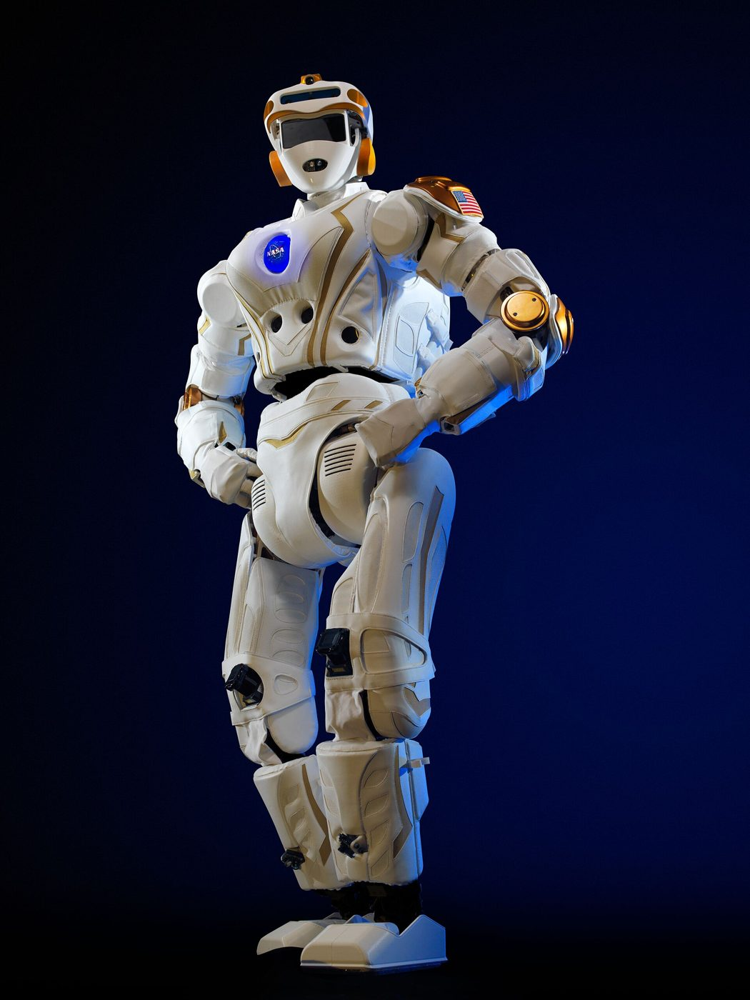
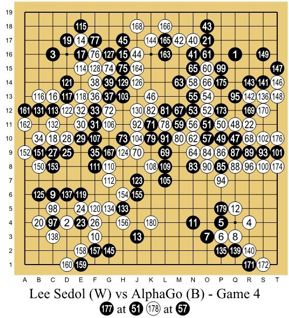

State
What the robot knows right now. Here: which square it's on.
Engineering · Robot Autonomy · Machine Learning
Nobody programs every step of a robot dog's gait anymore. Instead, engineers write down what counts as good and bad, and let the robot practice — millions of times, usually in simulation. That's reinforcement learning. Train a small robot to find its charger without falling down the stairs, and watch its "brain" fill in as it learns.
← Back to EngineeringThe idea
In motion planning a person writes the algorithm. In reinforcement learning (RL), a person writes only the reward: +1 for reaching the charger, −1 for the stairs, a small cost for every step. The robot has to figure out the rest by trying.
What the robot knows right now. Here: which square it's on.
What it can do: move up, right, down, or left.
The score for what just happened. The robot tries to maximize the total reward, not just the next one.
The robot's strategy: "in this state, do that." Learning = improving the policy. The arrows in the sim are the policy.
Sim · Q-learning
Press Train. At first the robot stumbles randomly. Every move, it updates a number called a Q-value: "how good is taking this action from this square?" Green squares have learned they lead to the charger; red ones have learned trouble is near. The arrow is the best action the robot knows so far.
Train at low speed for 30 seconds. Where does green appear first — near the start or near the charger? Why?
Erase the brain, set ε to 0, and train. Then try ε = 0.2. Why does a robot that never explores often get stuck with a bad route?
After training, move the charger. Test the policy. The robot still goes to the old spot. How long does relearning take?
Add wheel slip of 0.2 and retrain. Does the learned route still hug the stairs, or does it keep a safer distance?
The update rule
Q(s, a) ← Q(s, a) + α · [ reward + γ · max Q(s′, ·) − Q(s, a) ]
In words: "My old guess for this move, nudged toward what actually happened: the reward I just got, plus the best I think I can do from where I landed." α sets the size of the nudge. γ sets how much future reward matters. Good news slowly flows backward from the charger, one square at a time. That's why green spreads outward from the goal.
With probability ε the robot tries a random move instead of its best one. Too little and it never finds better routes. Too much and it never uses what it knows.
Robots do exactly what the reward says, not what you meant. Remove the step cost and a robot may wander forever, since nothing tells it to hurry.
From grid to real robots
This robot has 96 squares × 4 moves = 384 numbers to learn, so a table works. A real walking robot's state is dozens of joint angles, speeds, and camera pixels, which is far too many for any table. Deep RL swaps the table for a neural network, built from the same neurons as the perceptron, which estimates Q-values or picks actions directly.
Robots train in physics simulators, running thousands of copies faster than real time. The policy then moves onto the real robot. The simulator randomly changes friction, weight, and lighting so the policy can handle the messy real world.
Legged-robot walking and recovery, dexterous robot hands, drone racing, and warehouse grasping. DeepMind's AlphaGo used RL too — see the Go AI lesson.
RL needs huge amounts of practice, and practice on real hardware breaks things. That's why most robots still combine learned skills with the classic methods in this series.
Where you’ll see it
Click any photo to enlarge it.



Robot autonomy series
Quick check
1. In reinforcement learning, what does the human designer mainly provide?
2. Why do learned values spread outward from the charger?
3. What does ε (epsilon) control?
4. Why does deep RL use a neural network instead of a Q-table?